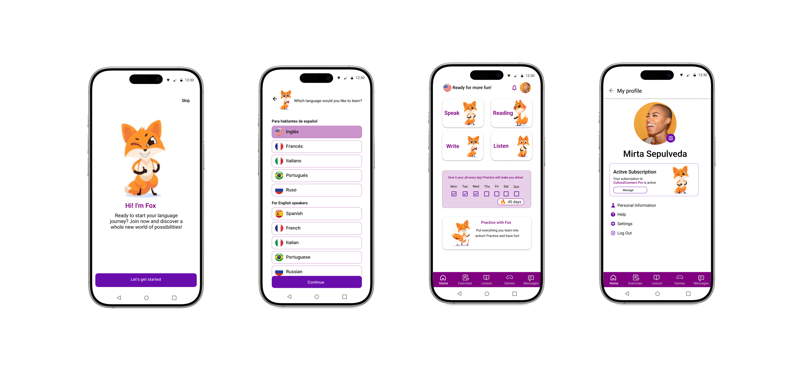

Project Description
CulturalConnect was a personal design project focused on improving the language learning experience through real conversations and cultural immersion.
The main goal was to explore how design and UX Writing can help users feel more confident when practicing a new language with native speakers, using microcopy to guide, motivate, and reduce anxiety.
Approach and Role
- ✓Designed the app structure, main user flows, and key screens.
- ✓Wrote interface copy (onboarding, buttons, tooltips, system messages) using a clear, supportive, and friendly tone.
- ✓Focused on how language can guide users and enhance learning experiences.
Key Takeaways
This project helped me deepen my understanding of the role of language in user experience, and how good writing can improve clarity, confidence, and engagement within an app.
Note
CulturalConnect was not developed, but it served as a valuable practice to apply user-centered design principles—especially in the area of UX Writing.
